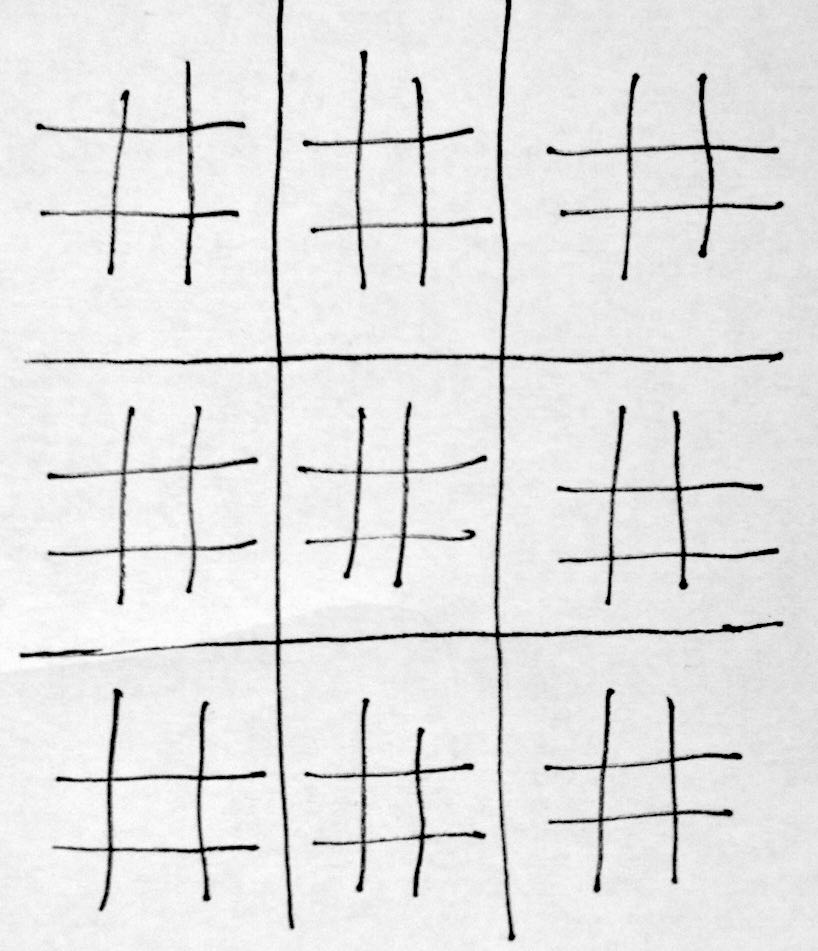
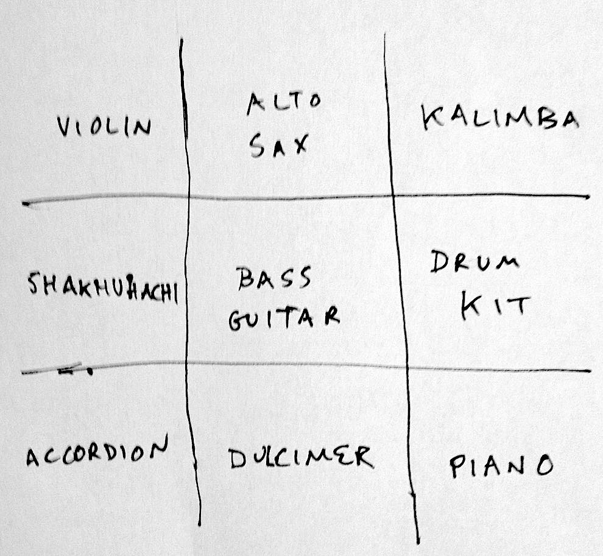
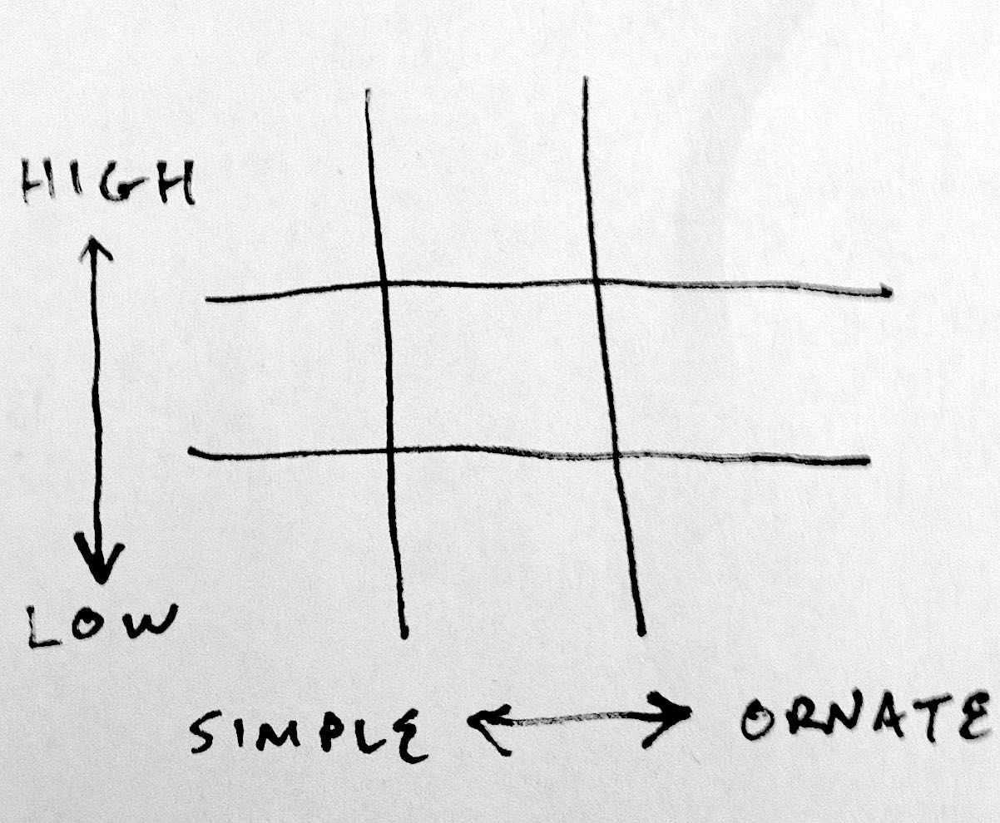

Yin Yang Ultimate Tic-Tac-Toe Notation for Nonet
© Jason Das, 2021
Revised December, 2013 - March, 2021
(TK: A video of a primordial performance of this score at the Automatic Music Hackathon, an event by Monthly Music Hackathon NYC on Saturday, December 7, 2013 at the Etsy office in Dumbo, Brooklyn NY USA.)
Introduction and Set-Up
This composition uses the game Ultimate Tic-Tac-Toe and the philosophical concept of Yin and Yang as a conductor and score/parameter generator for improvising musicians.
Ultimate Tic-Tac-Toe is a two-player game that uses a board composed of nine standard tic-tac-toe boards arranged as a 3×3 grid. This document does not explain the rules of Ultimate Tic-Tac-Toe, which are well documented elsewhere (see links below) and are in no way modified to suit the composition.
Yin and Yang ☯ is an ancient Chinese philosophical concept of interdependent dualism. Responsible examination of the meaning, context, history, and cultural significance of Yin and Yang is far beyond the scope of this document (again, see links below). Successful performance of this piece does not depend on strict or specific interpretation of Yin and Yang. Each ensemble or individual musician is encouraged to establish their own usable working definition.
There are eleven performers in total: two opposing game players and nine musical players. Each small board within the larger game acts as a score for one musician. Nine boards = nine musicians.
 Each turn in the game generates certain musical instructions, as described below.
The musicians must have a clear line of sight to the game board. A proven approach is to play the game on a large vertical display such as a whiteboard, chalkboard, or projector.
Obligations and Responsibilities
Assignment of musicians to squares, and determination of which opponent goes first, may be determined by chance, consensus, or executive order.
The game players are obligated only to the goal of winning the game, and must not act with intention to influence the music.
The musicians' fundamental overriding concern is conscientious interpretation of the parameters established by the gameplay. While adhering to these constraints, musicians are encouraged to listen to one another and to adapt their playing according to individual artistic interpretation.
As the game may potentially begin in any square, the performance may potentially begin with any musician.
Duration
The length of each turn and the length of the total performance will depend on the opponents' relative skill and alacrity. A game of Ultimate Tic-Tac-Toe may be over very quickly if both players move fast, or may take a very long time if one or both players move slowly.
While there are 81 total squares, it would be very unusual for a game of Ultimate Tic-Tac-Toe to not end well before all squares are filled.
Optionally, a game clock may be used to enforce maximum and/or minimum limits on the length of each player's turn.
Elements Not Dictated by This Score
Melody, harmony, key, rhythmic feel, and tempo are not determined by the game. The simplest approach is to allow these attributes to be freely negotiated by the musicians.
Optionally, these attributes can be established ahead of time. It is theoretically possible to perform this piece as, for example, a B♭ blues with a son clave at 130bpm; or as "Three Blind Mice" in C to the tempo of nearby traffic signals. Tread carefully, however: too many parameters may jeopardize artistically satisfying performance.
How to Play
Each of the nine small boards has two axes, nine squares, and two possible values for each square ("X" or "O").
The vertical axis determines Pitch: bottom = Low, top = High.
(for "unpitched" instruments, bottom = slower/larger vibrations, top = faster/smaller vibrations
The horizontal axis determines Complexity: left = Uncomplicated, right = Ornate.
The game players' symbols, X and O, determine dynamics and timbre, as manifestations of Yin and Yang, at the discretion of each musician. O = Yin and X = Yang.
While a more considered examination of Yin and Yang is strongly encouraged, the following shorthand may be useful as a starting point:
Yin (O): slow, soft, yielding, diffuse, cold, wet, passive; associated with water, earth, the moon, femininity, nighttime
Yang (X): fast, hard, solid, focused, hot, dry, aggressive; associated with fire, sky, the sun, masculinity, daytime.
Within a single move in this game, no single musician is ever mixing or moderating between Yin and Yang. At any given time, it's either one or the other. X or O, Yang or Yin.
Some examples:
An X in a lower left square indicates low pitches, simple complexity, and Yang-inspired energy.
An O in an upper right square indicates high pitches, ornate complexity, and Yin-inspired energy.
An X in a center square indicates median pitches, median complexity, and Yang-inspired energy.
When a board is won, the assigned musician plays continues playing within the parameters generated by their winning square.
If a board is completed as a draw/tie, the assigned musician stops playing completely, and is out of the piece.
Some musicians may play for much longer than others. Each musician begins playing when their game is activated. A musician whose board is won early in the game may have to maintain the same score for a long time. A musician whose board is a draw early in the game may stop playing long before the game is completed.
Musicians must pay strict attention to the gameplay. The game is the score and conductor.
To achieve a musically satisfactory ending, especial awareness is encouraged in anticipation of the completion of the game.
Winning and Conclusion
When the full game is won, all musicians (including those who suspended soundmaking due to a draw on their board) play in the fashion of the winning move. This continues for a period of time at the pleasure and discretion of the winning game player.
Variations to Explore
Stricter interpretation of the Yin and Yang as applied to musical expression.
Dualistic systems other than Yin and Yang.
Trio ensemble: each horizontal row (or vertical column) of three boards acts as a score for one of three musicians.
Duo ensemble: one musician plays X, the other O; both use all 81 squares as a score.
Octet ensemble: each musician plays a distinct (but overlapping) set of three boards in a row.
For any ensemble size, a sufficiently ambidextrous musician may devise a way to play two (or more) boards simultaneously, by playing multiple instruments or subdividing a single instrument.
Replacing human game players with AI automation is absolutely possible, but special attention should be given to the pacing of the turns. Even the most proficient and evenly matched human players will introduce a useful amount of durational variability, as compared to a computer.
Resources and References
Yin and Yang
https://en.wikipedia.org/wiki/Yin_and_yang
https://www.britannica.com/topic/yinyang
https://www.newworldencyclopedia.org/entry/Yin_and_Yang
Descriptions of Ultimate Tic-Tac-Toe
http://mathwithbaddrawings.com/2013/06/16/ultimate-tic-tac-toe/
https://en.wikipedia.org/wiki/Ultimate_tic-tac-toe
Playable online Ultimate Tic-Tac-Toe
http://ultimatetictactoe.creativitygames.net/
Bots playing Ultimate Tic-Tac-Toe against each other
https://www.codingame.com/multiplayer/bot-programming/tic-tac-toe
Other variants of Tic-Tac-Toe